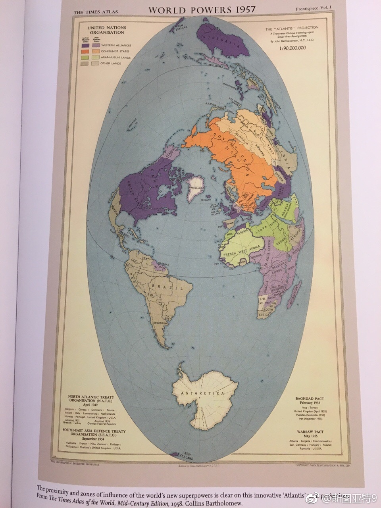
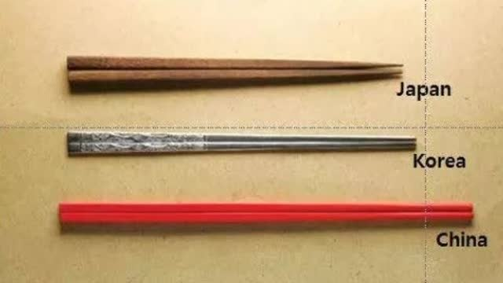

谁能给我科普一下30多个转发这篇微博，说“不会吧 那个时代穷人没人权”是怎么回事？机器人吗？机器人想得到什么？@斯图亚特9:原来克伦威尔虽然反对君主制，但他关闭了议会。作为护国主，他是实际的专权者。他1658年死了之后，他的儿子继承了护国主位置。他儿子很弱无法把控局势。如果克伦威尔多活几十年，英国会不会转型成共和国（虽然说民主还太早）？
原来克伦威尔虽然反对君主制，但他关闭了议会。作为护国主，他是实际的专权者。他1658年死了之后，他的儿子继承了护国主位置。他儿子很弱无法把控局势。如果克伦威尔多活几十年，英国会不会转型成共和国（虽然说民主还太早）？
1957年的地图，阿拉伯民族主义高涨的时候，阿拉伯国家和美苏阵营一起被标成了第三种颜色。60年之后，阿拉伯民族主义几乎灰飞烟灭，这些国家基本都在费力坚守世俗政权以防被伊斯兰主义侵蚀。历史真是让人唏嘘啊。 
我竟然忍不住想转发了一下新浪推送的热门视频……@看鉴:“#看鉴历史#【中日韩筷子哪家强?】中国是“筷子圈”的老大，日本和韩国也是筷子的忠诚追随者。虽然同样使用筷子，中日韩三国也是大有不同的，为什么这两双筷子走出国门就变了？看鉴的秒拍视频（使用#秒拍#录制）  57万次播放 03:27